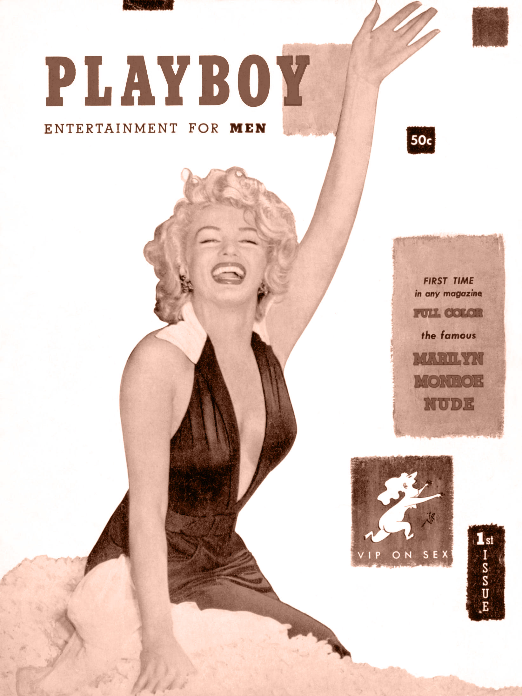
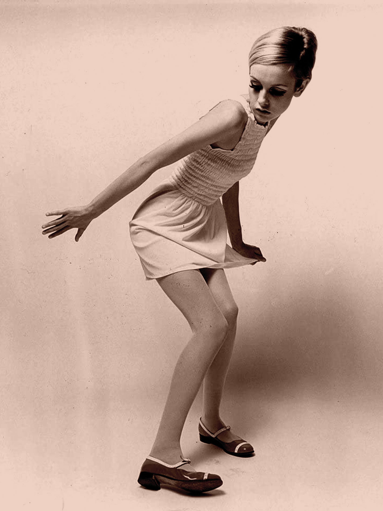
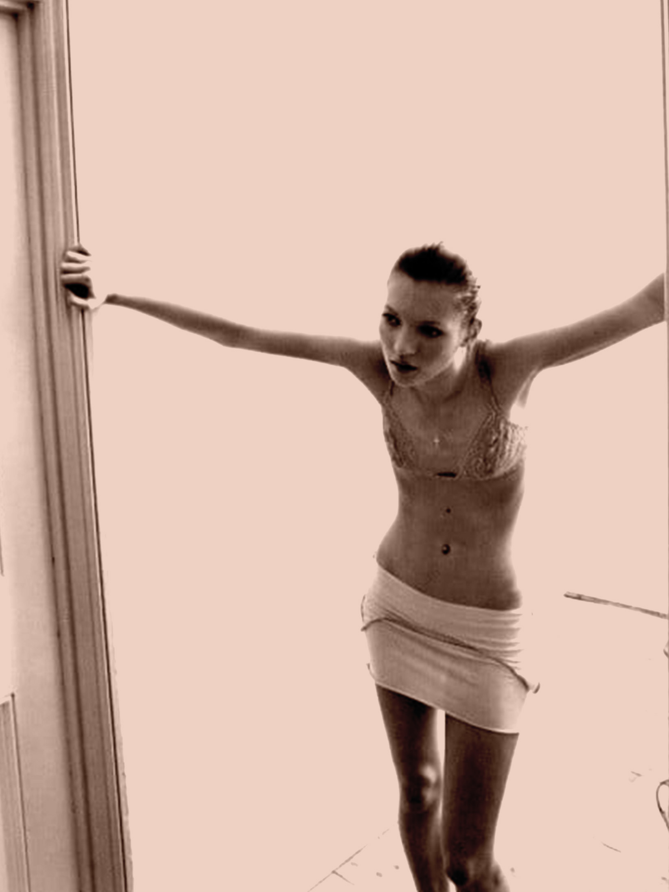
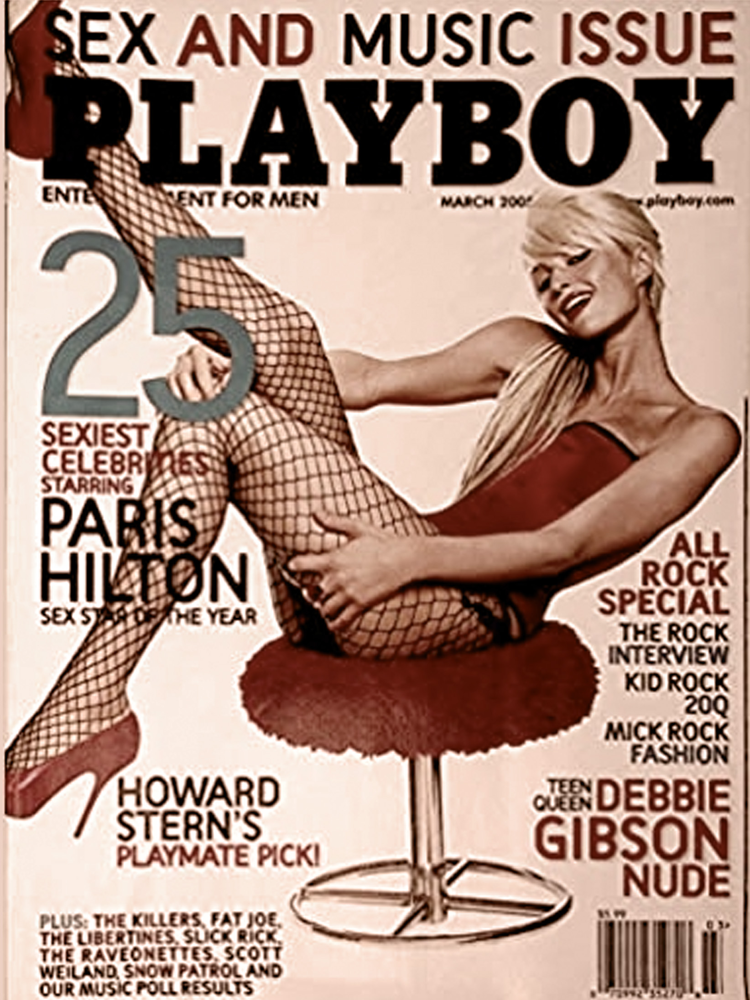

1950s Hour Glass
36-24-36
Playboy first quantified and coined the measurement in inches of "36-24-36” as the ideal female body type.
Marilyn Monroe for Playboy (1953)
1960s Androgyny
32-23-32
The swinging 60s ironned down the curves, dragging along a girlish trimmed line.
A Photo of Twiggy (1968)
1970s Disco Diva
32-23-32
Slenderness persisted with more skin for show at the 70s disco ballrooms.

Elsa Peretti Photo by Helmut Newton (1975)
1980s Fitness Queen
36-25-35
Fitness craze and glorified calorie burns of the 80s brought back some angularized curves.

Jane Fonda Iconic Workout Photo (1982)
1990s Heroine Chic
34-24-34
Peddulum swong back to Herine Chic in the mids of 90s grunge.
A Kate Moss Photo (1995)
2000s Pilates Body
36-24-34
Curves crept back with a glaze of toned abs and thighs of 2000s, setting the stage for Slim Thick.
Paris Hilton for Playboy (2005)
2010s Slim Thick
36-24-40

Kim Kardashian for Paper Magazine (2014)
"...hairless Asian skin with a California tan, a Jamaican dance hall ass...the abs of a lesbian gym owner, the hips of a nine-year-old boy...
The person closet to actually achieving this look is Kim Kardashian, who as we know, was made by Russian scientists to sabotage our athletes. Everyone else is struggling."
- Bossypants, Tina Fay